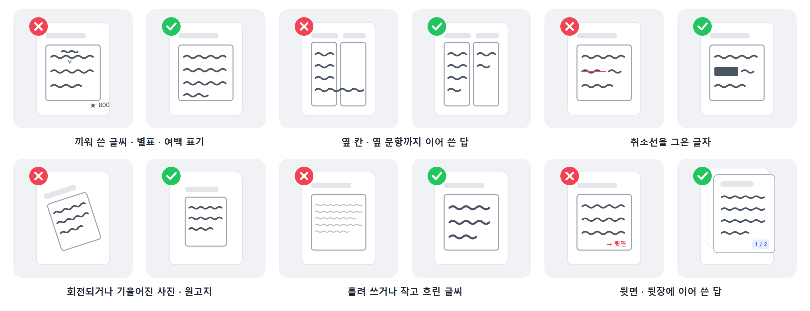

과제물은 이렇게 준비해요
활동지를 만들 때와 과제물을 스캔할 때 지킬 것.
세 가지만 지켜 주세요
활동지를 만들 때와 과제물을 스캔할 때, 아래 세 가지만 지키면 AI가 훨씬 잘 읽어요.
| 이렇게 해 주세요 | 왜냐하면 | |
|---|---|---|
| 1 | 활동지는 위에서 아래로, 한 단으로. 답란은 넉넉하게. | 여러 단으로 빽빽하면 읽는 순서가 섞이고, 답란이 좁으면 학생 답이 옆 영역으로 넘어가요. 크레딧은 학생 1명당 1개라 페이지가 늘어도 더 들지 않아요. |
| 2 | 그림·지도 위에 답을 쓰지 않게. 답란은 그림 아래나 옆에. | 글씨와 그림이 겹치면 글자의 경계를 구분하기 어려워요. |
| 3 | 과제를 걷은 뒤, 채점 표시를 하기 전에 스캔. | 빨간펜 첨삭이 남아 있으면 AI가 고쳐 쓴 내용을 학생 답으로 읽을 수 있어요. 표시가 꼭 필요하면 답의 위·아래 여백에 해 주세요. |
잘 안 읽히는 표기

| 이런 표기는 | 이렇게 읽힐 수 있어요 | 대신 이렇게 |
|---|---|---|
| V표를 하고 끼워 쓴 글씨, 별표, 여백에 적은 글자 수 | 본문 흐름 밖에 있는 건 놓치기 쉬워요. | 답란 안에 이어서 쓰게 해 주세요. |
| 옆 칸·옆 문항까지 이어 쓴 답 | 옆 문항의 답이 붙어 읽힐 수 있어요. | 지정된 답란 안에만 쓰게 해 주세요. |
| 취소선을 그은 글자 | 글자가 조금이라도 보이면 그대로 읽을 수 있어요. | 굵게 지우거나 새로 쓰게 해 주세요. |
| 회전되거나 기울어진 사진·원고지 | 거의 읽지 못해요. | 바로 세워서 스캔해 주세요. |
| 흘려 쓰거나 작고 흐린 글씨 | 사람이 봐도 헷갈리는 글씨는 AI도 잘못 읽어요. | 학생에게 또박또박, 진하게 쓰도록 안내해 주세요. |
| 뒷면·뒷장에 이어 쓴 답 | 스캔에 없으면 읽을 수 없어요. | 앞뒤 모두 스캔해 한 PDF로 합쳐 주세요. |
학생용 안내 한 줄
📝
활동지 위에 학생용 안내 한 줄을 넣어 보세요. "글씨는 또박또박, 답은 칸 안에, 덧칠이나 겹쳐 쓰기 없이" 같은 유의사항을 적은 과제는 학생 필기가 깔끔해져서 AI가 읽는 것도, 선생님 점수와 맞는 것도 함께 좋아졌어요.
파일 조건
- 학생 1명당 답안 파일 1개. 여러 장이면 하나의 PDF로 합쳐 주세요.
- 형식은 JPG · JPEG · PNG · PDF. HWP·DOC는 미리보기만 되고 채점되지 않으니 PDF로 바꿔 주세요.
- 학생이 클리포에 직접 입력한 답안은 읽는 단계 없이 바로 채점돼요.